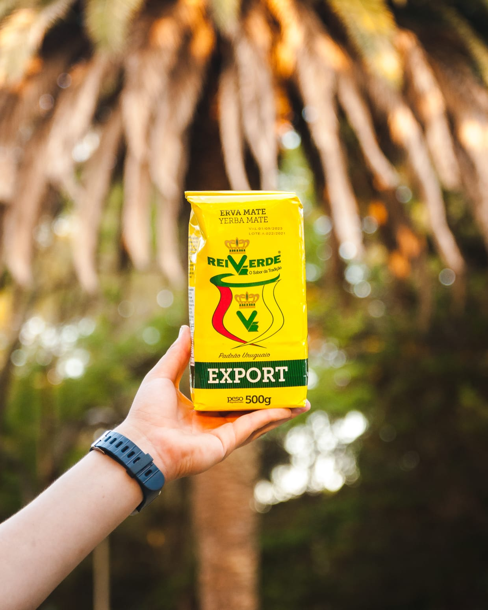
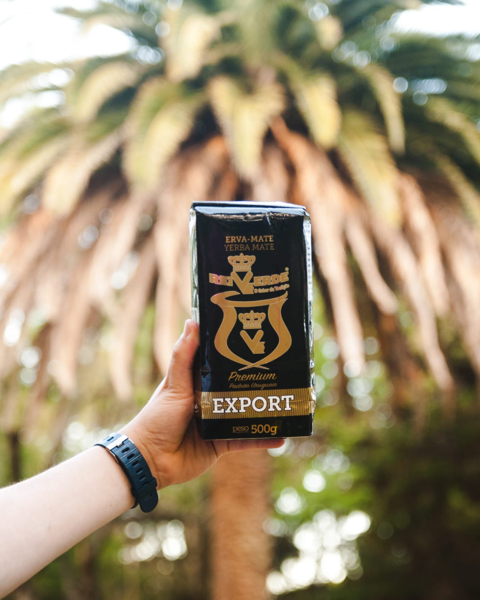
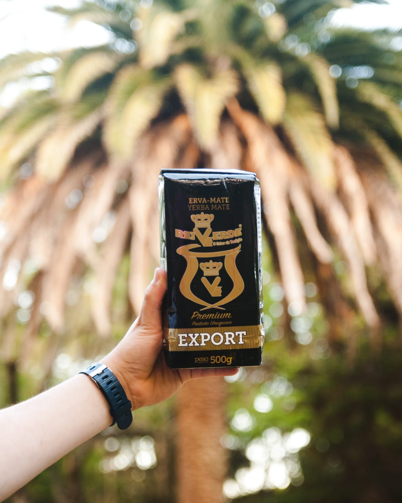

Somos dos amigos emprendiendo con el objetivo de poder traerte a la comodidad de tu casa las yerbas importadas más ricas para que prepares tus mates y que te acompañen en cualquier lugar.
 

Gracias a la calidad de nuestros productos y a los tips que te brindamos, tus mates van a ser mas duraderos y con un sabor unico!
Copyright Yerbas La Tandilia - 2022.
Todos los derechos reservados.